9 to 10 September: the map plug-in and a first loop
A test scene from the map plug-in, with a stand-in player on a simulated location in Central Park, and then the first screen that put a job on top of the map.
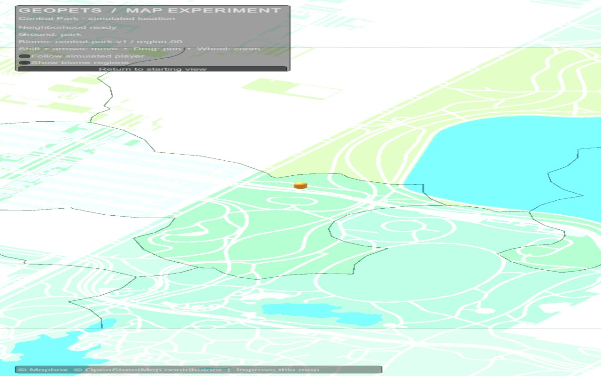
The first render, 9 September: pale map tiles, outlined zones and an orange stand-in for the player. 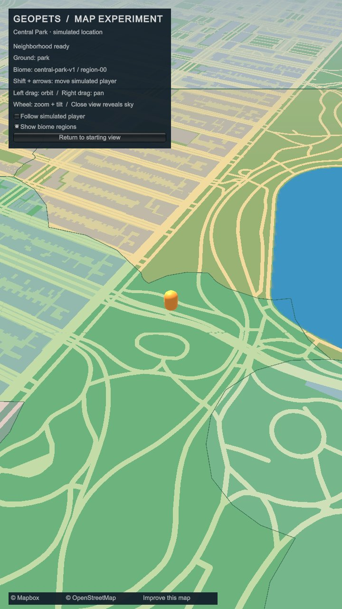
A tilted camera, 10 September: the same park in muted colour, with roads and a lake. 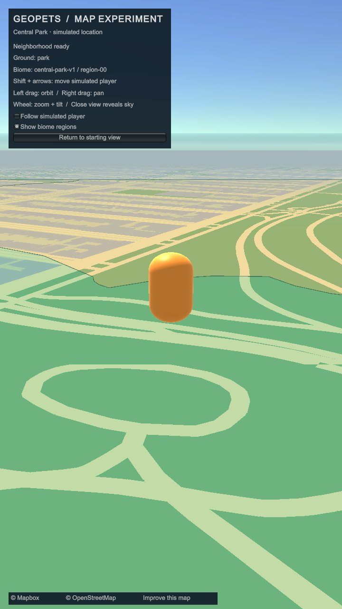
Close in, the camera reaches the horizon and a sky. 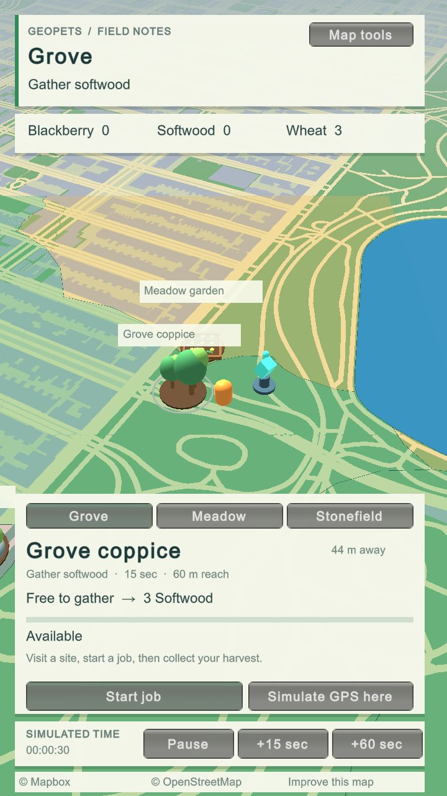
Field notes, 10 September: a site card, a job button and simulated time over the map.
12 to 13 September: a landscape drawn from map data
Roads, water and woodland from the map data, redrawn as a 3D landscape with trees, rocks, lakes and a time of day.
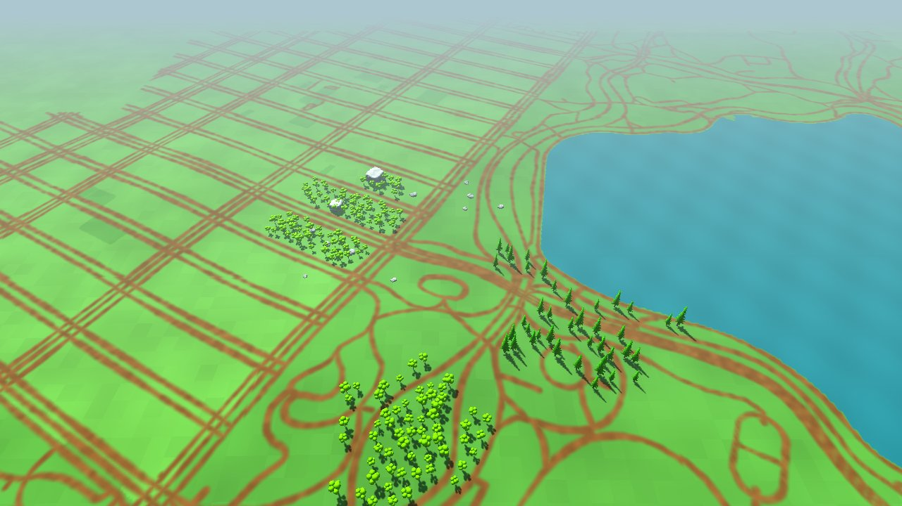
12 September, the first landscape: roads over flat green ground, with trees, rocks and a lake. 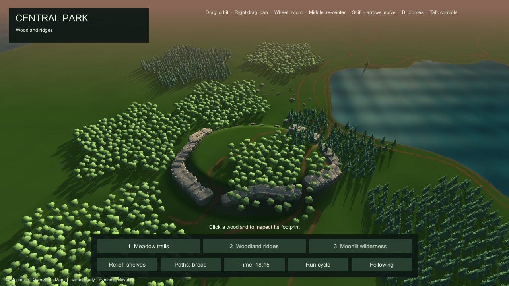
Later that morning: dusk light, shadows, rock ridges and denser woodland (the sixth version). 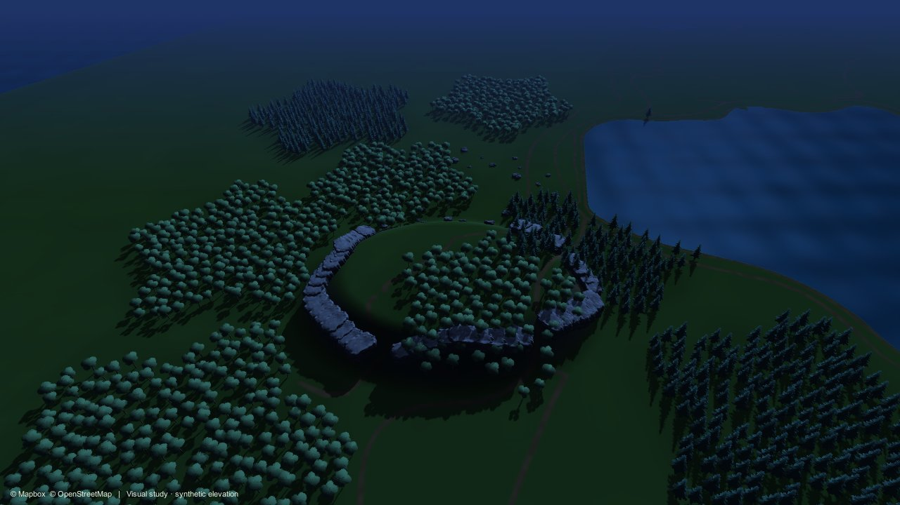
The same view at night. 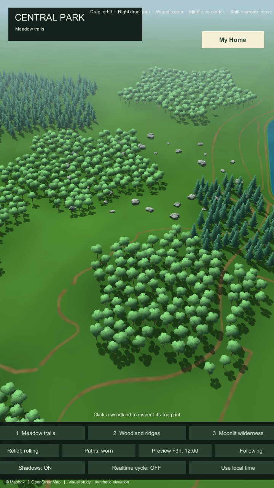
13 September, in portrait: woodland on the map with a My Home button and test controls along the bottom. 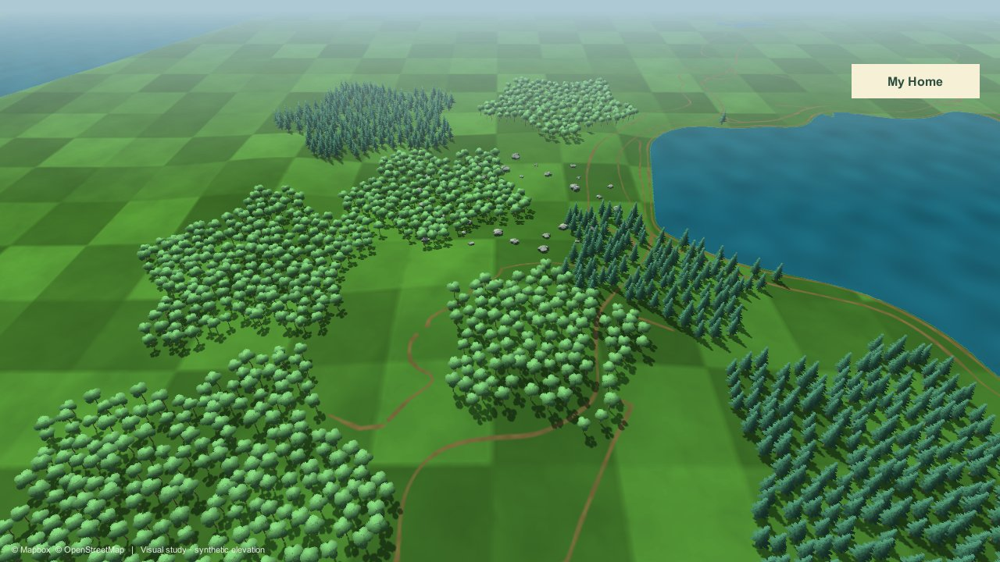
13 September: a chequered ground replaces the plain green.
12 September: a place above it all, and a market
The first floating Home island, and a first market screen that switches between simulated test accounts.
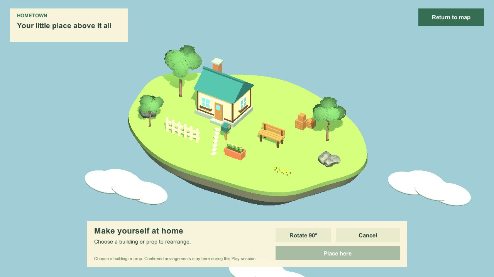
The first Home: a cottage and a few props on a floating lawn, with a rearrange panel. 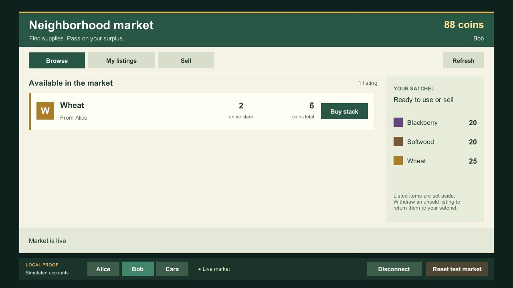
The first market screen: one listing, a satchel and a switch between test accounts.